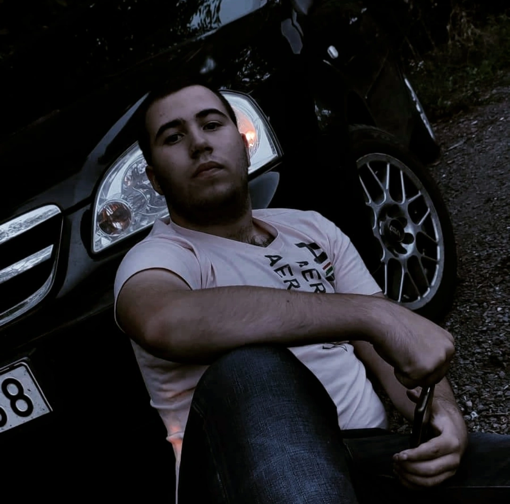
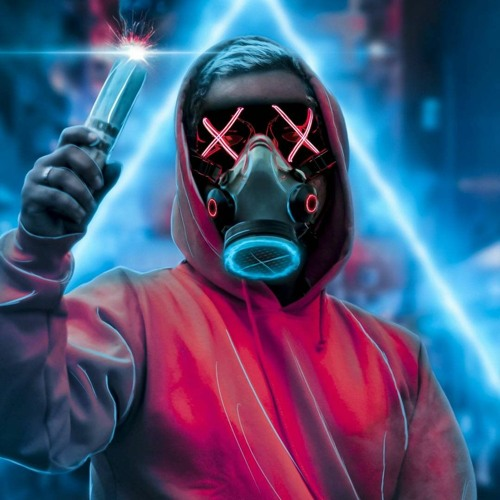

Kicsit magamról...
 Katona Valentin Fábiónak hívnak, a SZÁMALK-Szalézi Technikum és Szakgimnázium nappali Szoftverfejlesztő és tesztelő szakos hallgatója vagyok. Heves megyéből, Gyöngyös járásából érkeztem, egy 2000 fős településről. Rengeteg szabadidős tevékenységem van, idesorolva a DJ-zést, amelyből "szakképesítéssel" rendelkezek. Ezen kívül nagyon szeretek vezetni, amely számomra megnyugvást, feltöltődést, koncentrációképesség növelését és boldogságot jelent. Minden erőmmel azon is dolgozok, hogy idén (2023-ban) a 'C' kategóriás jogosítványt is megszerezzem és beugrós sofőrként hasznát tudjam venni. Ezeken kívül a szabadidőm fontos részét a videójátékokkal való időtöltés is képezi. Ezen időtöltések minden egyes részében (de legfőképp a DJ-zésben) részt vesz a zene, ami szintén rengeteg megnyugvást és folyamatos szórakozást nyújt.
Hobbijaim
Zenekeverés
 Kiskorom óta foglalkoztatott a zene, de honnan is indult ez az egész? Gyermekkoromba már próbálkoztam zenekeveréssel, amit akkor nem értettem, nem tudtam, mi hogyan működik és nem volt meg az a zenei ízlés, így felhagytam a próbálkozásokkal. Később zenei iskolába iratkoztam, ahol akusztikus gitáron tanultam. Mikor Gimnáziumba mentem, akkor hagytam fel a 7 éves gitár tanulmányommal. Akkor elkezdtem újra az elektronikus zenei világ felé kacsintgatni, és tudtam, hogy ami nagyon érdekel az a basszus. Így elkezdtem Basszusorientált zenéket hallgatni, közbe úgy a basszusosabb rapeket is kezdtem megkedvelni. 2019 volt az az év, mikor a YouTube ajánlásával megkedveltem egy lengyel klubzenei stílust, azaz a VIXA-t. Ott döntöttem el, hogy újra megpróbálkozok a zenekeveréssel és elkezdtem utánajárni, ezzel tanulva a folyamatot. Annyira megkedveltem és annyira éreztem, hogy ezt csinálnom kell, hogy 2021 Novemberében jelentkeztem a Sonic School elektronikus zenei iskola DJ képzésére, ahol tovább képeztem az egyedül megszerzett tudásomat. Végül 2022 Februárjában megszereztem a képesítést, ami hatalmas könnyebbséget adott és jobban bele tudtam mélyülni a lengyel zenei világba. Itt is lenne 2 rövid kis ízelítő videó:
Videójátékok
Mióta az eszemet tudom foglalkozok videójátékokkal, vagyis inkább annak játszásával. Számtalan játékkal játszottam már, a Need For Speed Underground sorozattal, a Most Wanteddal, számtalan túlélő játékkal, mintpéldául a The Forest, a Raft, simulatorokkal ide sorolva az Euro Truck Simulator-t, az OMSI-t és még sorolhatnám. Leginkább amik lefoglalnak mostanság, a különféle szerepjátékok, és túlélőjátékok. Ha erről a témáról beszélek, akkor érdemes megemlítenem a nosztalgiázást, hisz sok játékot játszok emulátor segítségével ezzel visszaidézve kedvenc videójátékaimat.
Eddigi munkáim
Webprogramozás
Sör
Szereted a söröket, vagy érdekel hogy melyik sör mikor és hol készült? Akkor ez a te oldalad, mihamarabb csekkold:
Webshop
Imádod a FallGuys-t és szeretnél beszerezni néhány custumet? Itt a legjobb árakat találod a skinek megvásárlására:
Sportautók
Autóőrült vagy? Imádod a sportautókat de nem tudod hogy mégis milyenek léteznek? Kattints és tudd meg:
Java
Robot Tippel
Készítettünk még egy Robot tippelős játékot, amiben az a lényeg, hogy ki kell találnia a robotnak, a gondolt számot.
Nyugták
Java órán feldolgoztuk néhány féleképpen a vásárláskor kapott nyugtát. Itt le tudod tölteni és meg tudod nézni őket.
Itt a Piros
Scanneléses játék Javaban, amely az Itt a Piros nevezetű játékról szól. próbáld ki és verd le te is az ellenfeled!